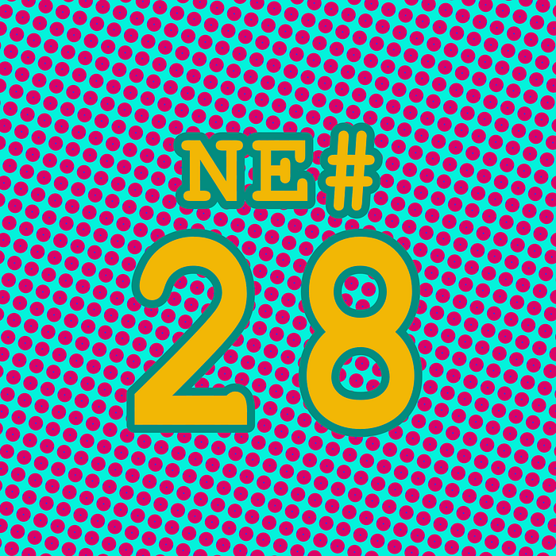

Die Nerd Enzyklopädie 28 - Damönen aus der Nase

In der Informatik gibt es den Begriff des „undefinierten Verhaltens“ (undefined behaviour) [WIKI7]: Wenn eine Software bzw. Code auf unterschiedlichen Systemen zu unterschiedlichen Ergebnissen führt, was natürlich nicht vorkommen darf, spricht man von eben diesem „undefinierten Verhalten“. In der Programmiersprache C hat sich dafür der Begriff „nasal demons“ etabliert. Den Ursprung hat dieser Ausspruch in der Usenet Gruppe comp.std.c und einer Diskussion in 1992. Ein Nutzer meinte damals:
“When the compiler encounters [a given undefined construct] it is legal for it to make demons fly out of your nose” [CATB]
Übersetzt also: Trifft der Compiler auf ein „undefiniertes Konstrukt“, sollte es ihm erlaubt sein, Dämonen aus deiner Nase fliegen zu lassen.
Ein einfaches Beispiel in C ist z.B. dieses [ACCU1]:
bool b;
if (b)
printf(“b is true\n”);
if (!b)
printf(“b is false\n”);
B wird als Boolesche Variable deklariert, aber nicht initialisiert. Es ist also nicht eindeutig klar, ob B wahr oder falsch ist. Der Compiler darf machen, “was er will”. Wie z.B. Dämonen aus deiner Nase fliegen lassen…